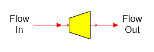

Pressure Reducer As its name implies, a pressure reducer station is used to reduce the pressure of a vapor flow stream.

General Features Pressure reducing stations are used to allow for pressure drop in a pipeline, valve, orifice, or process equipment. The discharge pressure from the pressure reducer can be specified, or a value can be entered for pressure drop. Flow through the pressure reducer is adiabatic and the change in pressure will result in a change in the discharge temperature if the flow contains vapor. Also, if there is water and vapor in the flow stream, Sugars will calculate the change in the water/vapor fractions as a result of the pressure drop. No change in sucrose crystallization is considered. A pressure feedback flow can pass through a pressure reducer if the Pressure Drop is specified for the reducer instead of the Pressure Out. For example, a pressure reducer with Pressure Drop can be used in the vapor flow line from a flash tank when the flash tank is using pressure feedback to determine its flashing pressure. The pressure fed back to the flash tank will increase by the amount of the drop in pressure specified for the pressure reducer as it passes through the reducer.